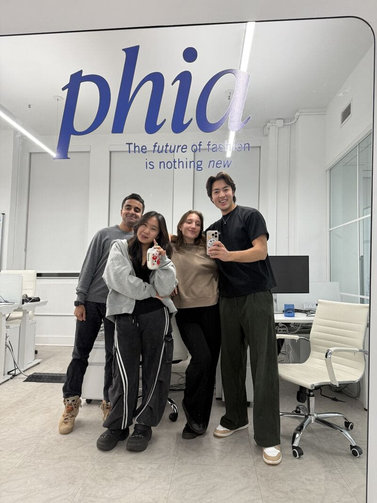
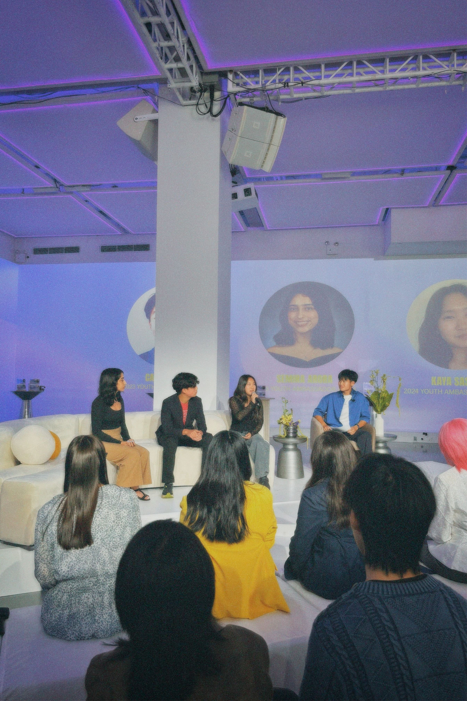
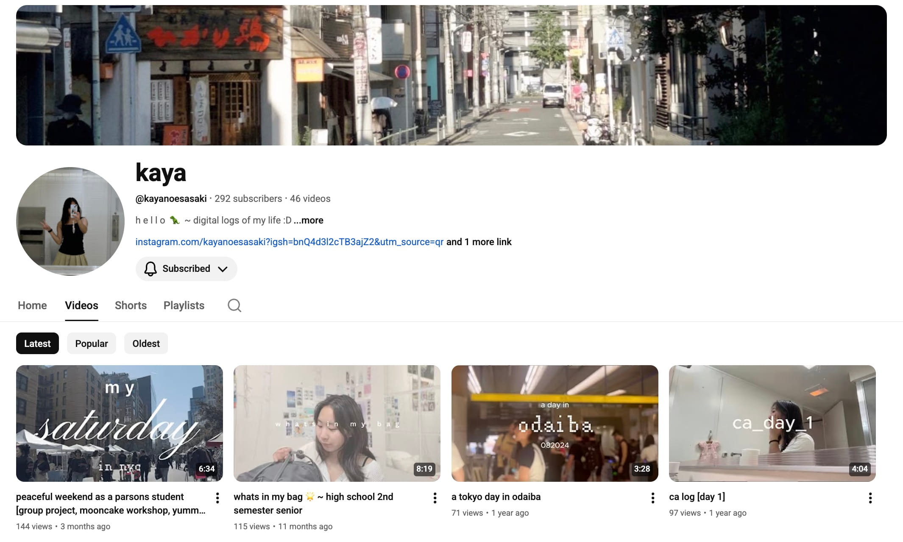

Kaya Sasaki
Hi my name is Kaya Noe Sasaki. I’m Japanese American and I've lived in New York most of my life, but I was born in California. I really love to sing, dance, and learn new things. I study Strategic Design and Management at Parsons and work at a fashion tech startup called Phia.
REJECTION IS REDIRECTION
When I was a sophomore in high school, I had an existential crisis. I felt like I was living for
no purpose — not in a suicidal
way, but in a fulfillment type of way. I would come home and cry for hours even though nothing
was “wrong”, I just wanted to
do something with myself.
That's when I started thinking about what purpose means. I realized that our careers are such a big part of our lives, and so many people spend theirs feeling unfulfilled. I was introduced to the creative side of tech a year ago during college app season. I was dead set on being a finance bro doing investment banking. No hate, but it's boring. I thought I was destined for that path because I liked operations and business. That's why I applied to NYU for business and economics. When my ED got rejected, it was a big reality check:
There wasn't a reason why I wanted to go down that path. It was just a path that everyone seemed to be on.
After thinking about what I've enjoyed in life, my hobbies, and what I want to pursue professionally, I realized that there's a space that exists between the arts and tech. I like operations and doing the back management of projects. I like knowing that these projects impact people's lives. This path was for me and I fully dived into it.
That's when I started thinking about what purpose means. I realized that our careers are such a big part of our lives, and so many people spend theirs feeling unfulfilled. I was introduced to the creative side of tech a year ago during college app season. I was dead set on being a finance bro doing investment banking. No hate, but it's boring. I thought I was destined for that path because I liked operations and business. That's why I applied to NYU for business and economics. When my ED got rejected, it was a big reality check:
There wasn't a reason why I wanted to go down that path. It was just a path that everyone seemed to be on.
After thinking about what I've enjoyed in life, my hobbies, and what I want to pursue professionally, I realized that there's a space that exists between the arts and tech. I like operations and doing the back management of projects. I like knowing that these projects impact people's lives. This path was for me and I fully dived into it.
GET YOUR TOE IN THE DOOR
If it was any later, I wouldn't have been in Phia. The reason why it all worked out was just
perfect timing. When I emailed [Phia],
they weren't out in the world yet. I was aware of them because there was a little bit of hype. A
year later, when I was thinking about
where I'd want to cold email, their name popped up again and I thought: “Why don't I just email
them?”
I sent the email at 12 AM so it'd land at the top of their inbox in the morning. Phoebe responded at 8:56 AM. We hopped on a call the week after, I went in person a month later, and have been part-time since April.
I just laid myself out. This is me. I'm looking for blank, and I can provide blank.
You'd be surprised at the amount of people that don't even include their resume. When I managed
Phia's recruitment inbox, I saw people
who just wrote two lines: “We'd love an internship and would love to connect. Excited to hear
back!” They don't even explain why. Those
emails don't stand out. The ones that do are from people who literally lay themselves out — show
who they are and what they can do.
If you want something, it's not that hard to get it — you just have to put yourself out there. Get your foot in the door. You can literally have a toe in the door, that's enough.
I sent the email at 12 AM so it'd land at the top of their inbox in the morning. Phoebe responded at 8:56 AM. We hopped on a call the week after, I went in person a month later, and have been part-time since April.
I just laid myself out. This is me. I'm looking for blank, and I can provide blank.

Kaya @ Phia
If you want something, it's not that hard to get it — you just have to put yourself out there. Get your foot in the door. You can literally have a toe in the door, that's enough.
NETWORKING AT EVENTS
There's value in everyone you talk to - it's up to you to determine what that value means. In
events, you'll meet people who are cracked at
whatever they're doing. Then you'll see people that are just there to get the food. I went to an
event the other night and they were like, “What
the fuck is this event? I just came here for the salami.” [Laughs]
It's not just about seeking valuable people, but also displaying how you can be valuable to them.
You can tell when people are not interested in what you're talking about — it's human. But
there's always something worth acknowledging and
respecting. Maybe you haven't talked to them enough to realize what's interesting. The questions
will come naturally if you're genuinely curious
about what people are talking about.
During an event, I keep track of everyone I've talked to and make sure that I get their contact info. If it's a Gen Z event, I ask for Instagram. If it's corporate people in their late 20s, I ask for their email. I have this assumption that if I'm a freshman in college asking some 28-year-old for their LinkedIn, it sounds desperate - you know what I mean?
After the event, I go down the list, thank everyone, and reference what we talked about in the conversation to let people know I was paying attention. Whatever it might be just to make your impression a bit more impactful. Everyone's super, super, super connected. The world is so small, you can use those mutuals as a springboard for connecting with other people.
It's not just about seeking valuable people, but also displaying how you can be valuable to them.

Kaya as a panel speaker for Act To Change
During an event, I keep track of everyone I've talked to and make sure that I get their contact info. If it's a Gen Z event, I ask for Instagram. If it's corporate people in their late 20s, I ask for their email. I have this assumption that if I'm a freshman in college asking some 28-year-old for their LinkedIn, it sounds desperate - you know what I mean?
After the event, I go down the list, thank everyone, and reference what we talked about in the conversation to let people know I was paying attention. Whatever it might be just to make your impression a bit more impactful. Everyone's super, super, super connected. The world is so small, you can use those mutuals as a springboard for connecting with other people.
THE SENTENCE THAT CHANGED MY LIFE
The thing that's changed my life is realizing my purpose, which sounds really cliche, but
it's true. I'm in Phia. I make Youtube videos for fun. I
have all these hobbies and interests. I seek all these opportunities. Yes, it's nice for the
resumeés, but what is it all for?
I sat down for an hour and crafted this single sentence about my trajectory in life. It's
transformed the way I think. I'm the type of person who likes
a sense of direction and purpose in life. Now I feel so secure and so confident in what I'm
destined to do.
"My ultimate life goal at the moment is to work towards finding ways to blend strategy and creativity to build spaces that empower diverse voices, spark new ideas, and inspire community and connection."
It sounds really wordy, but it feels right to me. That's all that matters. I truly recommend doing this for anyone. Knowing your values is important, socially, professionally - every aspect of life. It's like a life compass for me. It seems small, but the impact is large.

Kaya's Youtube Channel
"My ultimate life goal at the moment is to work towards finding ways to blend strategy and creativity to build spaces that empower diverse voices, spark new ideas, and inspire community and connection."
It sounds really wordy, but it feels right to me. That's all that matters. I truly recommend doing this for anyone. Knowing your values is important, socially, professionally - every aspect of life. It's like a life compass for me. It seems small, but the impact is large.

DOOR
1
ARCHIVE
SUBJECT: KAYA SASAKI
DATE: NOV 2, 2025
Kaya and I became suitemates after I reached out to her on Instagram. She's the most hardworking, definition of "hustle" person I know.
I've noticed a pattern where whenever I move somewhere new, typically the first person I meet has the greatest impact on me.
Within the 5 months I've known you, you've introduced me to so many new thought processes, habits, and experiences; Thank you.
DATE: NOV 2, 2025
Kaya and I became suitemates after I reached out to her on Instagram. She's the most hardworking, definition of "hustle" person I know.
I've noticed a pattern where whenever I move somewhere new, typically the first person I meet has the greatest impact on me.
Within the 5 months I've known you, you've introduced me to so many new thought processes, habits, and experiences; Thank you.